Connect reaction planning to recorded amounts and evidence. Keep theoretical product, isolated yield, conversion, identity and purity as separate claims.
Retrieve the starting idea
Write amount = mass / molar mass with units. What quantity results from g divided by g/mol?
Begin with functional-group changes
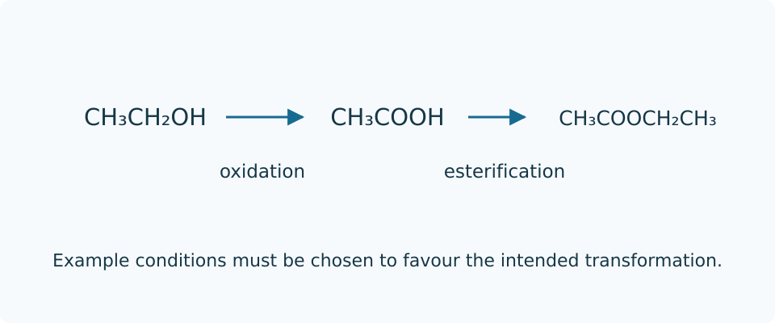
Two simple transformations connect an alcohol and an ester
Which two transformations connect ethanol to the ester through an acid?
Apply: begin with functional-group changes
Where does the ethoxy fragment of the final ester come from?
Choose the intended oxidation endpoint
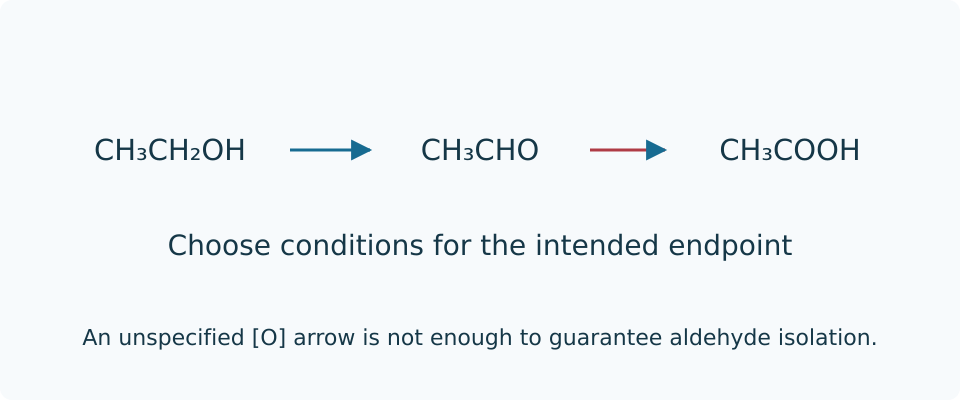
An aldehyde target requires a different stopping point
Why is an unspecified oxidation arrow insufficient for an aldehyde target?
Apply: choose the intended oxidation endpoint
Is stopping oxidation early the same as proving pure ethanal?
Inspect the actual aspirin transformation
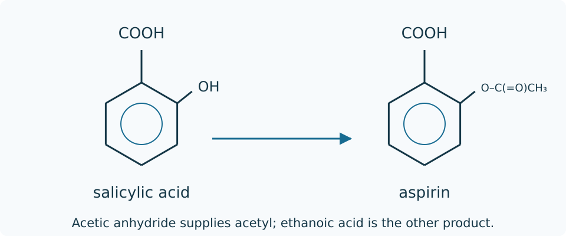
Aspirin formation acetylates the phenolic oxygen
Which oxygen-containing site changes and which acid group remains?
Apply: inspect the actual aspirin transformation
Would every O–H-related feature necessarily disappear after successful acetylation?
Balance the amount calculation first
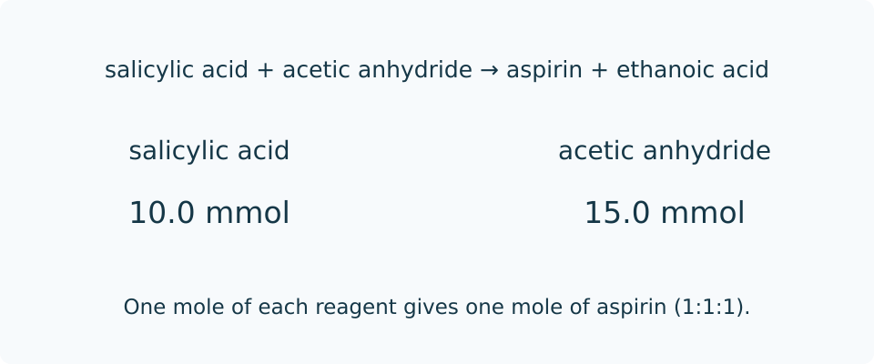
An amount table follows a balanced equation
What mole ratio connects the two reagents and aspirin?
Resolve: balance the amount calculation first
An amount table follows a balanced equation
The supplied teaching equation is salicylic acid + acetic anhydride → aspirin + ethanoic acid, all coefficients one.
Apply: balance the amount calculation first
Why include the ethanoic acid product in the equation?
Convert mass to chemical amount
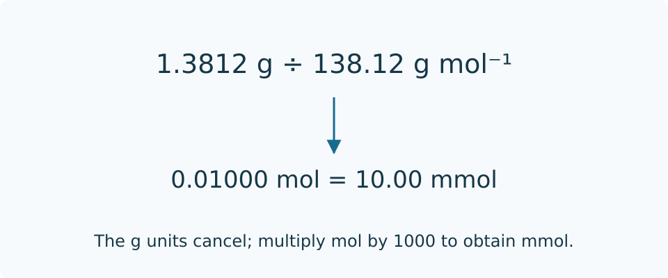
Mass divided by molar mass gives chemical amount
Which units cancel in 1.3812 g divided by 138.12 g/mol?
Compare amount divided by stoichiometric coefficient
Which starting amount gives the smaller n/coefficient?
Resolve: compare available reaction extents
Compare amount divided by stoichiometric coefficient
10.0 mmol/1 is smaller than 15.0 mmol/1, so salicylic acid limits theoretical aspirin formation.
Apply: compare available reaction extents
Does the smaller gram mass always identify the limiting reagent?
Transfer the rule to another equation
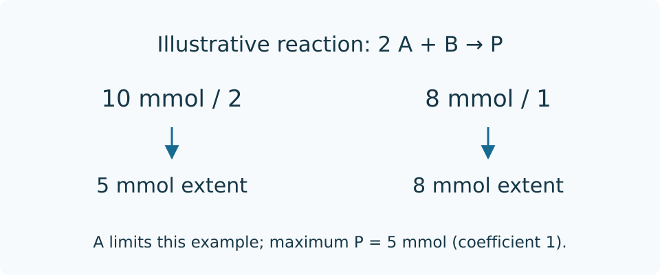
Stoichiometric coefficients change the limiting comparison
For 2A + B → P, compare 10 mmol A and 8 mmol B.
Resolve: transfer the rule to another equation
Stoichiometric coefficients change the limiting comparison
A gives 5 mmol extent while B gives 8 mmol; A limits and at most 5 mmol P can form.
Apply: transfer the rule to another equation
What changes if the product coefficient were two?
Change one input and predict first
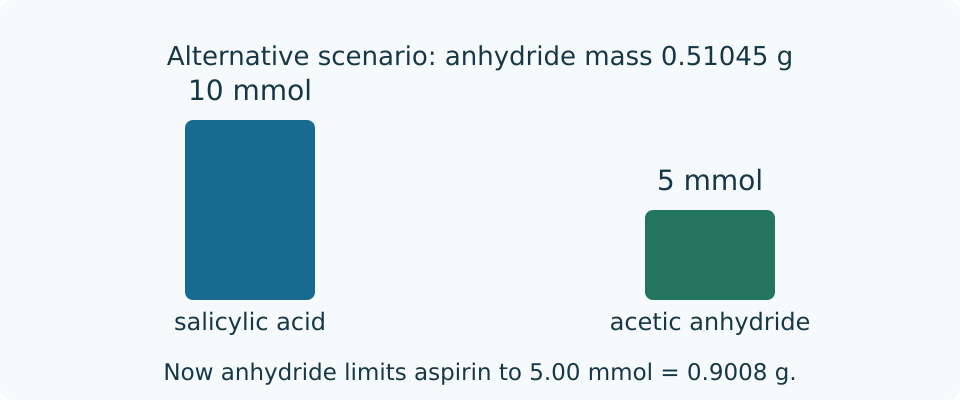
Changing one input can change the limiting reagent
If anhydride is reduced to 0.51045 g, does the original limiting reagent remain limiting?
Resolve: change one input and predict first
Changing one input can change the limiting reagent
That mass is 5.00 mmol anhydride, so it now limits the 1:1 reaction instead of the 10.0 mmol acid.
Apply: change one input and predict first
Calculate the new maximum aspirin mass with M = 180.16 g/mol.
Calculate theoretical product mass
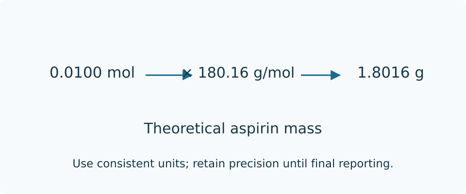
Theoretical mass is a stoichiometric prediction
What does the supplied 10.0 mmol limit predict in grams?
Resolve: calculate theoretical product mass
Theoretical mass is a stoichiometric prediction
0.0100 mol × 180.16 g/mol = 1.8016 g theoretical aspirin before final rounding.
Apply: calculate theoretical product mass
Does this prediction prove complete conversion?
Use the independently measured isolated mass
Isolated yield compares recovered mass with theoretical mass
How does 1.20 g compare with 1.8016 g theoretical?
Resolve: use the independently measured isolated mass
Isolated yield compares recovered mass with theoretical mass
100×1.20/1.8016 ≈ 66.6% apparent isolated yield, assuming the material weighed is product.
Apply: use the independently measured isolated mass
What is the approximate yield for 1.10 g with the same starting amounts?
Inspect the mass–yield relationship
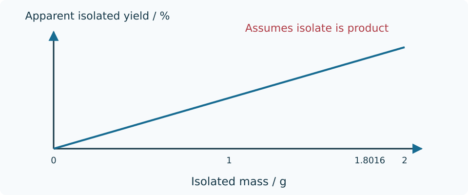
A mass-based yield scales with recovered mass
Why is the line straight when theoretical mass stays fixed?
Apply: inspect the mass–yield relationship
Would an apparent value above 100% demonstrate an excellent synthesis?
Read the plate as a separation observation
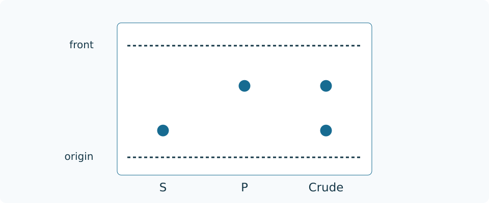
Simulated TLC: crude contains two visible components
What do two visible crude spots support under these conditions?
Apply: read the plate as a separation observation
Can their relative spot darkness directly give conversion?
Measure from a common origin
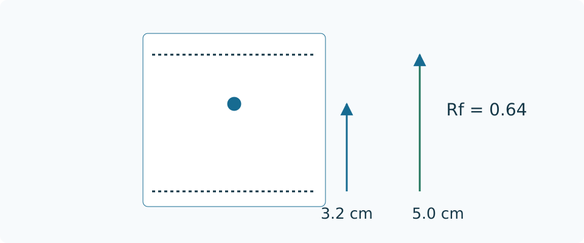
Measure both TLC distances from the same origin
Which two distances enter Rf for the product reference?
Resolve: measure from a common origin
Measure both TLC distances from the same origin
Spot centre 3.2 cm divided by solvent-front distance 5.0 cm gives Rf 0.64. Both start at the baseline.
Apply: measure from a common origin
What are the units of Rf?
Interpret the numerical Rf
Rf measures distance relative to the solvent front
Why compare samples on the same plate and conditions?
Apply: interpret the numerical Rf
Could an Rf measured in another eluent uniquely confirm identity?
Recognise an uncomputable quantity
A TLC front must be recorded before calculating Rf
Can spot distance alone reconstruct a reliable Rf?
Apply: recognise an uncomputable quantity
What primary observation should have been recorded?
Test the one-spot inference
Two compounds can co-migrate on a TLC plate
How can two compounds produce one TLC spot in this example?
Apply: test the one-spot inference
What modest conclusion is supported by a single visible spot?
Compare TLC with independent evidence
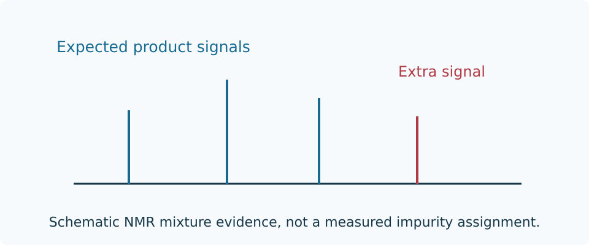
A mixture can add signals without changing a single TLC spot
What does an extra major NMR signal ask you to investigate?
Resolve: compare TLC with independent evidence
A mixture can add signals without changing a single TLC spot
A mixture, residual solvent, starting material or an incorrect assignment could contribute. Do not name a unique impurity without enough evidence.
Apply: compare TLC with independent evidence
Should a high isolated yield overrule contradictory NMR?
Predict retained and changed spectral motifs
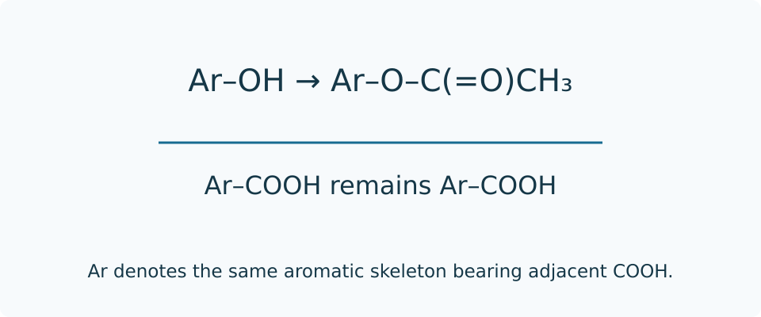
The acid group is retained while the phenolic OH is acetylated
Why can an acid-region feature remain in an aspirin-like product?
Apply: predict retained and changed spectral motifs
Which starting-group interpretation would be too strong from acid O–H alone?
Use product spectra with the target structure
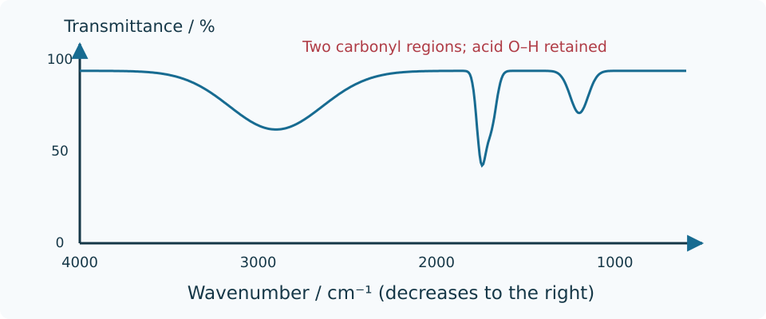
Simulated aspirin-like IR teaching trace
Which combination is consistent with acid plus ester functions?
Apply: use product spectra with the target structure
Why label this trace simulated rather than measured?
Keep the two mass inputs independent
Trace a reported result back to its observations
Which measurements determine theoretical mass, and which enters yield separately?
Apply: keep the two mass inputs independent
What should happen when only isolated mass changes in an Rmd report?
Integrate one short case
A 1:1 teaching reaction uses 10.0 mmol limiting reagent; product M = 180.16 g/mol and isolate = 1.20 g. Give theoretical mass, apparent yield and one limitation.
Compare the worked reasoning
Theoretical mass is 1.8016 g and apparent isolated yield about 66.6%. The isolate may contain impurities or solvent, so mass alone does not establish purity.
Exit explanation
Why does one visible TLC spot not prove pure product?